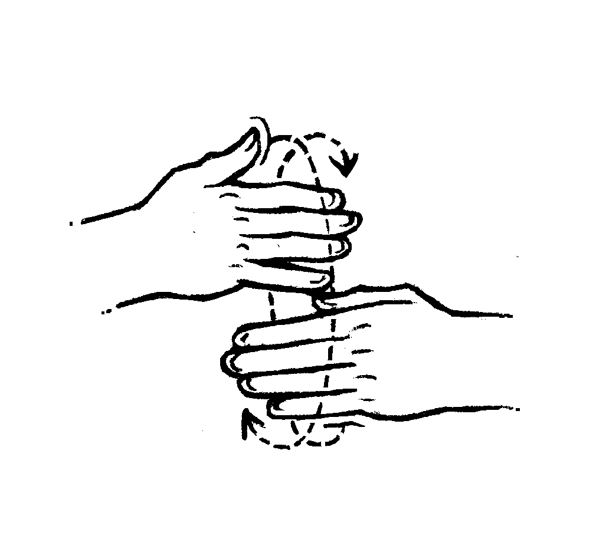
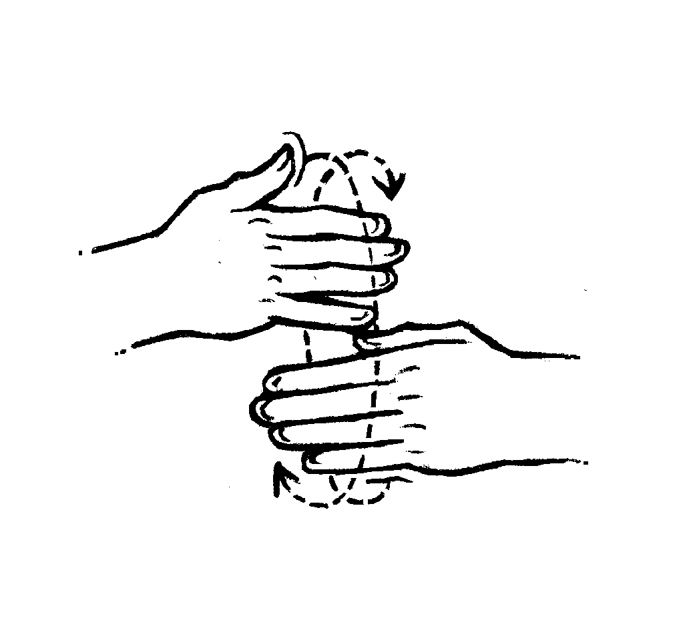
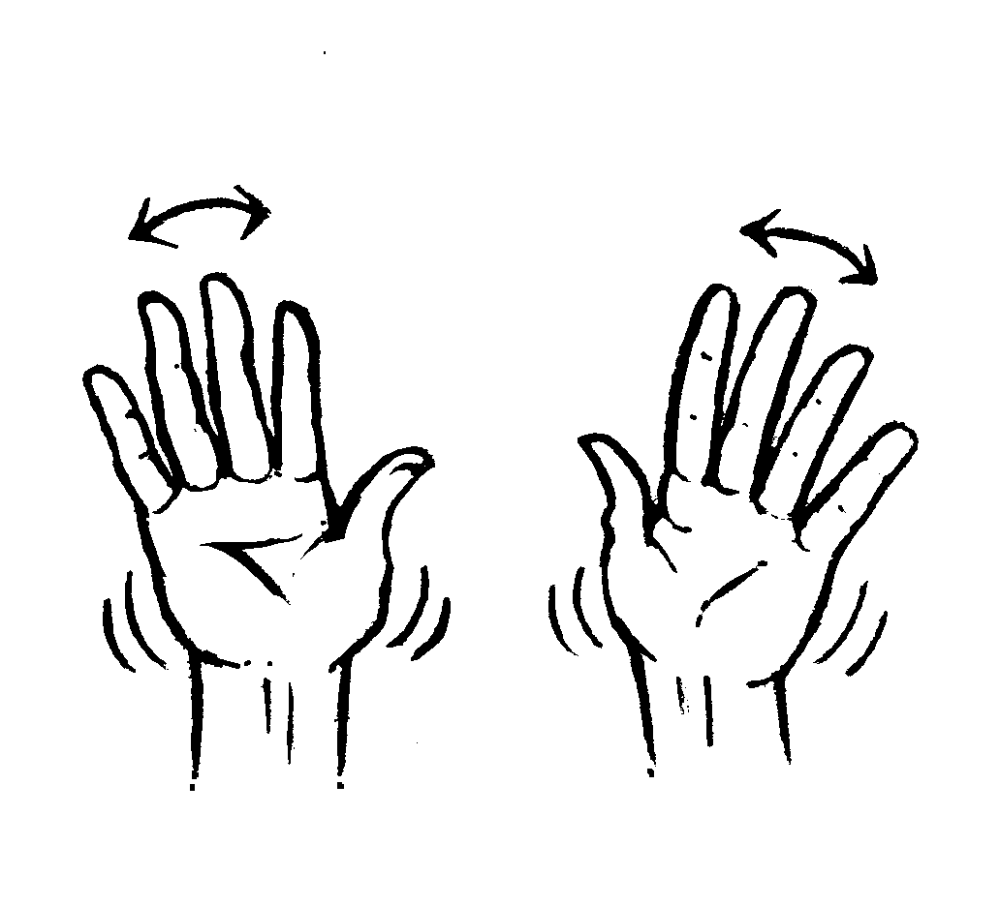
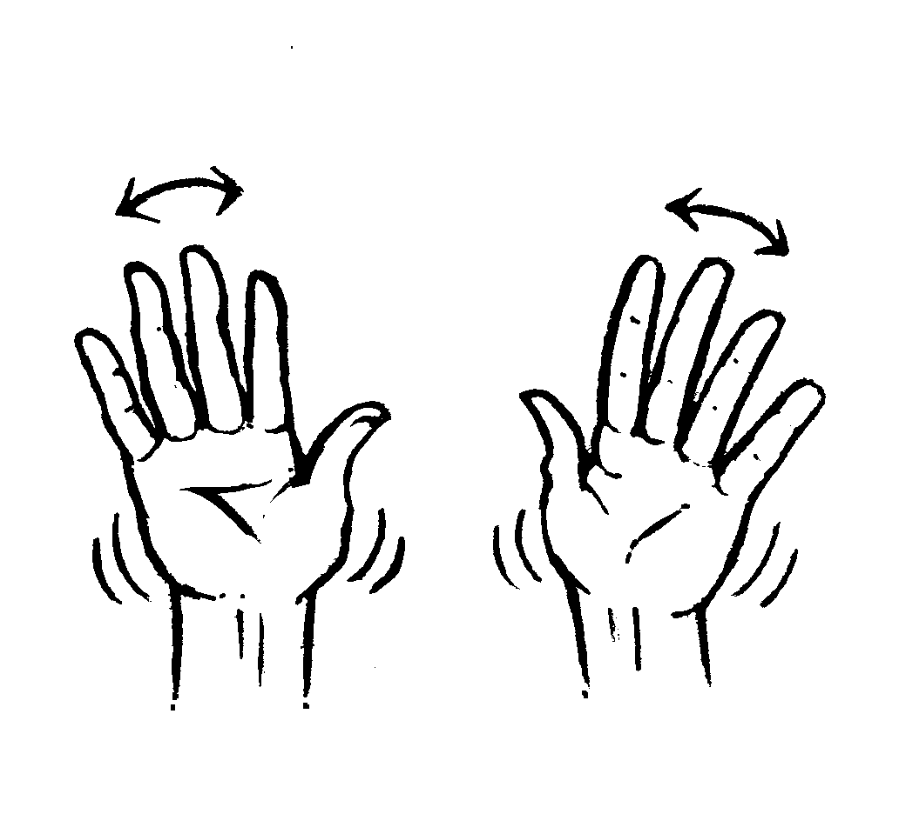

About
About Projects
Projects Books
Books Games
Games Stories
Stories Store
Store Notes
Notes How-to
How-toI really love drawing hand gestures, and have provided some poses for a few projects.
๏ Uxn ASL
Curwen Hand Signs

I drew these cartoony hands to represent the Solresol Curwen Hand Signs.
Invented by Jean-François Sudre, Solresol is an artificial language based on the seven syllables of Music(do, re, mi, fa, sol, la, si). There are no specific pronunciation rules beyond the standard readings of the solfège.
The Curwen hand signs are used to communicate the seven syllables of music using your hands.
In-session communication
Some hand signals drawn for Andrew Devault for use when in meetings with others.
 

 

hand talk
Hand Talk, or Plains Sign Talk, is a trade language that was once the lingua franca across what is now central Canada, the central and western United States and northern Mexico, used among the various Plains Nations.

I use Hand Talk frequently in my comic hakum.

{kind=link}
{kind=link}
Ben beat me to it, but all of the Hand Talk signs are documented on Corvid Cafe. I keep a local copy of the page as an offline reference. What I love about Ben's page is that it is searchable, so it is easy to look up different words.

"Sign language is so faithful to nature and so natural in its expression that it is not probable that it will ever die. It has a practical utility, and should not be looked upon merely as a repetition of motions to be memorized from a limited list, but as a cultivated art, founded upon principles which can be readily applied by travelers. Sign language may be used to advantage at a distance, which the eye can reach but not the ear, and still more frequently when silence or secrecy is desired." William Tomkins Source
uxn asl

The uxn documentation includes hand gestures which we believe might serve a dual purpose, making the Uxntal language as a system that can be used outside of a computer for general computing arithmetic, as well as to help students to familiarize themselves with hexadecimal finger-counting and bitwise operations. The system uses a few existing gestures from ASL, and purposefully creates new gestures to disambiguate others.
Hexadecimal numerals are widely used by computer system designers and programmers because they provide a human-friendly representation of binary-coded values. Uxn gestures differenciate from traditional ASL numbers which are used only in the names of, and references to, labels.
See the full guide.
We worked on this project while waiting for good weather to cross the Strait of Georgia from Nanaimo to Secret Cove on May 27-28th 2022.
I drew these by hand, inked them by hand, photographed them and cleaned them up in Gimp.
Learn the asl alphabet.
asl
American Manual Alphabet
I am currenty learning ASL, so I drew the alphabet as practice and as a reference for myself.
"The one-handed American sign language alphabet is a set of 26 manual alphabetical letters, corresponding to the English alphabet. It is used to fingerspell a string of the alphabetical letters of a certain English word, person's name, etc."

Contrary to common belief, ASL is not structured like English. It has its own grammar, lexicon and structure. In English when you ask a question say, pitch matters, but in ASL your hand sign as well as your eyebrows will help mark a question.
Disclaimer: I am a hearing person, therefore a non-native signer, and because I am there may be mistakes in the following. I am merely compiling notes to teach myself ASL.
Why learn ASL?
ASL is a way to broaden understanding of another culture, and all that this entails. Sign language may be used to advantage at a distance, which the eye can reach but not the ear, and still more frequently when silence or secrecy is desired.
How to construct phrases
Subject + Verb. ASL allows you to put the subject before or after the verb when making simple sentences, the order doesn't matter.
Subject > verb, and verb > subject are both ok.
Direct objects. The direct object can go either before the subject or after the verb.
Example:
[EN] "He sells computers"
[ASL] "Computers - He - Sells."
**Word order may matter in certain phrases, in such situations leave them in the common English order.
Indirect objects. Indirect objects come between the verb and direct object, in ASL the indirect object goes after the subject.
Example:
[EN] "I give everyone pickles"
[ASL] "Me - everyone - pickles - give."
Questions. When asking questions, the standard format is Time(if any) + Subject + Object + Question.
Examples:
[EN] "Are you going to the show tonight?"
[ASL] "Tonight - Show - You - Go - ?"
[EN] "Why is that dog licking the ground?"
[ASL] "That - dog - ground - licking - why - ?"
[EN] "How did the cat get stuck in the tree?"
[ASL] "Cat - Tree - Stuck - How - ?"
When asking a question in ASL, it is necessary to sign the question word at the end of the sentence (who, what, when, where, which, why, and how). The question mark sign ought to be signed repeatedly. It's also possible to make the question mark sign as the start of a sentence. Furrowing the brows and jutting out the chin also help to mark a question.
The question part of the sentence ought to be the last word(or the last two, depending on sentence complexity).
Classifiers
Depicting verbs (classifiers) are hand-shapes that represent a noun group, used to enrich sentences by conveying more information. It is used in ASL to show movement, location, and appearance.
Say a signer signs "Car", a classifier can be used after to show where it's going, how it moves, what it looks like, and where it is located.
Classfiers are referred to in writing as a series of letters and numbers, ex: CL:5. "CL" is short for classifier, 5 refers to the numbers of fingers that are up. When signing, a signer may add variations to the classifier handshapes by bending fingers, and by positioning the hand horizontally.
For example, the CL:1 handshape (which is a 1 handshape) can be used for a person that is standing, or for a thin object(pole, pencil). The same 1 handshape, but with the finger bent, can mean a snake, or an old person.
When chaining classifiers, the noun is always signed before its classifier.
Example:
[EN] "A dog is under the table."
[ASL] "Sign for table (using non dominant hand) - Assigns 'table' a horizontal CL:B(B handshape) - Sign for dog (using dominant hand) - Assigns CL:2b bent classifier to dominant hand (while still keeping the non-dominant hand in the horizontal B handshape)."
Notes: At the end, the CL:2b bent fingers hand sign will come to sit under the other hand to show the dog is under the table. If the dog was lying on the table, the CL:2b bent fingers hand sign would be sideways.
Further actions with the face can help enrich sentences. For instance, to show how complex and fun ASL sentences can get, if lowering the eyelids while signing CL+lying-down this would mean that the dog was 'relaxing on the table'. If closing the eyes while signing CL+lying-down it will mean the dog is asleep.
ASL classifiers can be categorized into classes of classifiers:
Body classifier (BCL)
Body part classifier (BPCL)
Element classifier (ECL)
Descriptive classifier (DCL)
Instrument classifier (ICL)
Semantic classifier (SCL)
Sources:
Classifiers in Sign Language
Introducing classifiers in sign language
PDF on classifiers types